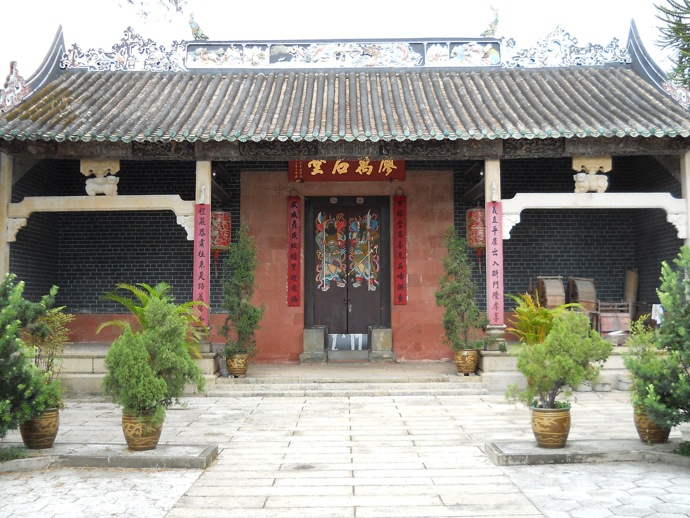
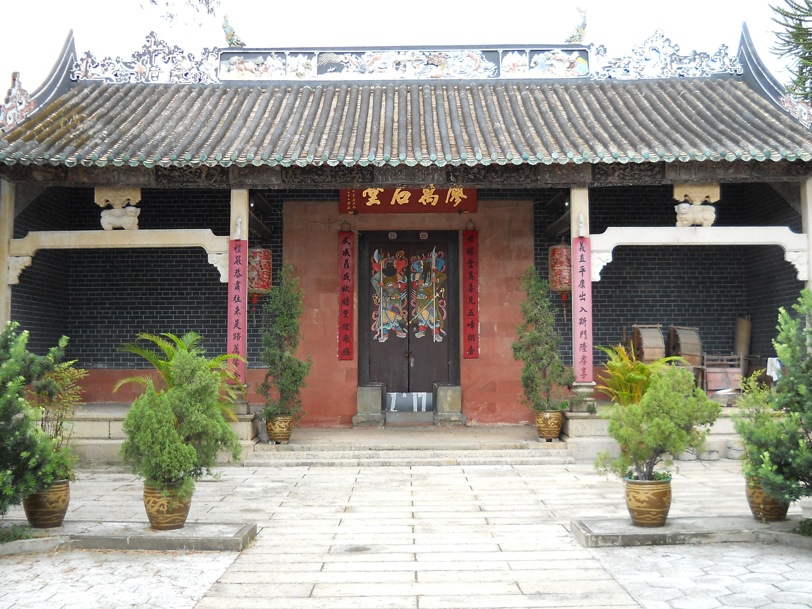

上水圍
 

簡介
上水圍（又稱上水鄉）位於香港北部都會區的河套平原上，坐落於梧桐河與石上河之間。因其北面有「雙魚河」，古時與粉嶺一帶合稱「雙魚市」。由於圍內村位於梧桐河之上，廖氏族人稱此地為「上水鄉」，名稱於明末清初確立，並見於1864年的《廣東圖》。
歷史與文化
上水圍的歷史始於明末清初，廖氏族人於1646年建成具有圍牆與護河的圍內村，以防禦盜匪。圍內村分為四斗：長房居北斗，二房居東斗與西斗，三房居南斗。後因人口增長，圍外陸續建成八村，合稱「上水鄉」。如今，「上水圍」一名深入人心，常被用來泛指整個上水鄉地區。
廖氏源於河南，相傳為顓頊帝後裔，元代中葉（1271-1368年）從福建南遷至廣東，開基祖廖仲傑最終定居上水雙魚河。族人自稱客家人，現散居嶺下、小坑、福田等地，圍內村則為其根源地。
建築特色
圍內村的圍牆與護河建於1646年，結構嚴謹，是新界少數保留原有護河的圍村。村內的廖萬石堂建於1751年，是香港保存最完好的客家宗祠之一，1985年被列為法定古蹟，內有珍貴文物展示家族歷史。此外，顯承堂和明德堂兩間分祠亦為族人祭祀與集會的重要場所。
景點亮點
上水圍融合了歷史建築與自然景觀，是探索客家文化與生態旅遊的絕佳地點。遊客可漫步圍村，感受傳統與自然的和諧共存。
可持續旅遊提示
- 請尊重當地文化，避免干擾居民生活。
- 保持環境整潔，不亂扔垃圾。
- 支持本地手工藝品和農產品，促進社區經濟。